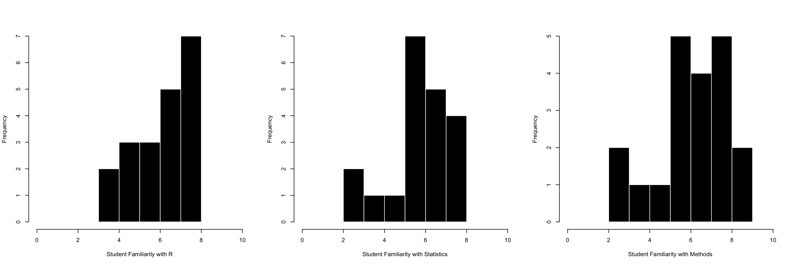

par(mfrow = c(1,3))
hist(d$fam.r, col = "black", bor = "white",
xlab = "Student Familiarity with R",
xlim = c(0,10), main = "")
hist(d$fam.stat, col = "black", bor = "white",
xlab = "Student Familiarity with Statistics",
xlim = c(0,10), main = "")
hist(d$fam.rm, col = "black", bor = "white",
xlab = "Student Familiarity with Methods",
xlim = c(0,10), main = "")
knitr::kable(describe(d[,c(2:4)], skew = F), digits = 2, align = "c")| vars | n | mean | sd | median | min | max | range | se | |
|---|---|---|---|---|---|---|---|---|---|
| fam.r | 1 | 20 | 6.55 | 1.50 | 7 | 3 | 8 | 5 | 0.34 |
| fam.stat | 2 | 20 | 6.15 | 1.63 | 6 | 2 | 8 | 6 | 0.36 |
| fam.rm | 3 | 20 | 6.50 | 1.88 | 7 | 2 | 9 | 7 | 0.42 |


SOCIAL SCIENCE : REAL (TM) SCIENCE